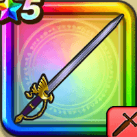

はやぶさの剣
攻略班 5.0点 / いなずま斬りぶんまわしメタル斬り改はやぶさ斬り改
くわしい特徴
【レベル別習得スキル】 Lv1攻撃力+5 Lv10いなずま斬り（消費MP：3）いなずまを剣に纏わせて斬り敵1体に威力130%のデイン属性斬撃ダメージを与える Lv15ぶんまわし（消費MP：9）振りまわした剣で、敵全体に威力120%の斬撃ダメージを与える Lv20メタル斬り改（消費MP：8）メタル系に+2ダメージを与え、それ以外には威力100％の斬撃ダメージを与える Lv30はやぶさ斬り改（消費MP：14）敵1体に140％の無属性斬撃ダメージを2回与える Lv35悪魔系へのダメージ+3% Lv40さいだいMP+5 Lv45攻撃時+2%の確率で猛毒を与える Lv50攻撃力+5 【限界突破スキル】 1凸はやぶさ斬り改のダメージ+3% 2凸はやぶさ斬り改のダメージ+3% 3凸はやぶさ斬り改のダメージ+3% 4凸はやぶさ斬り改のダメージ+3%